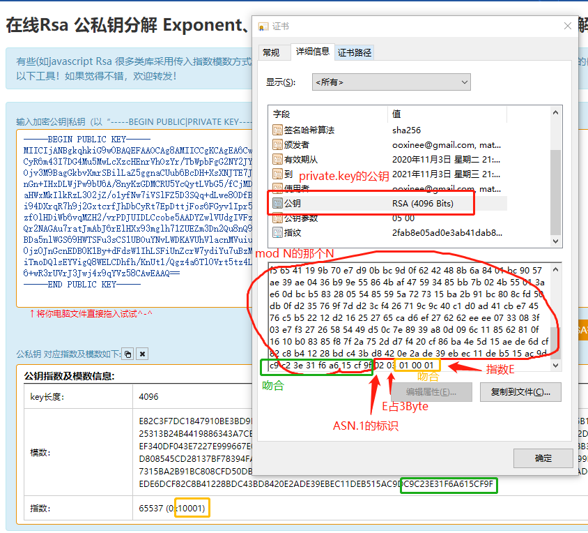
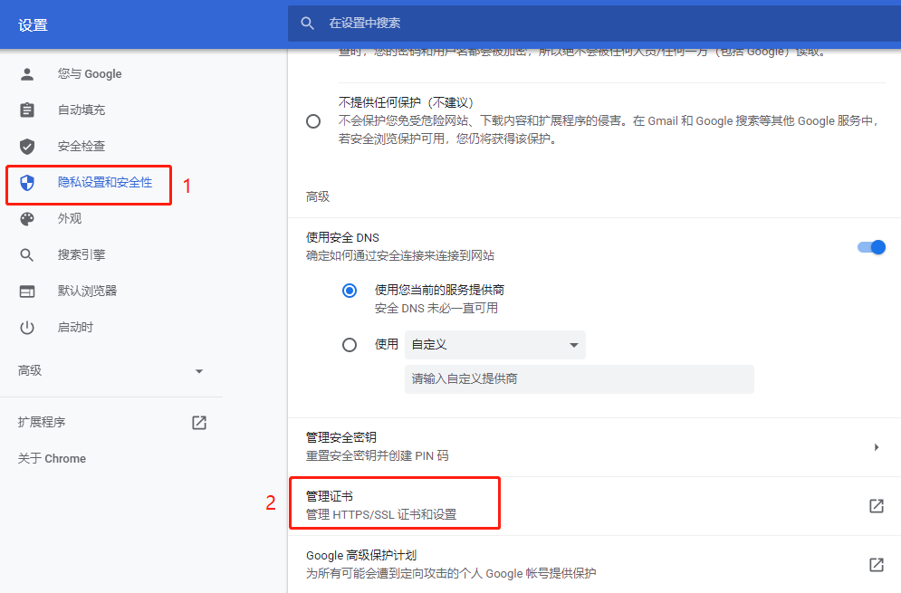
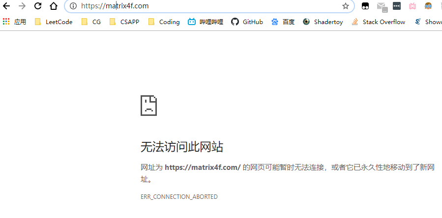
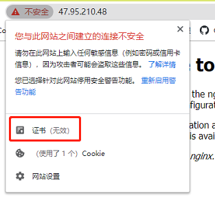
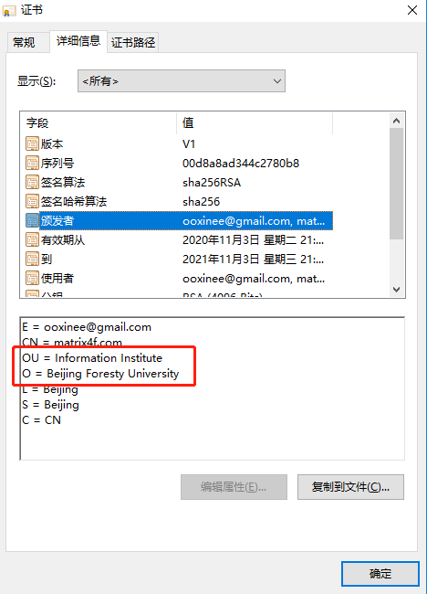
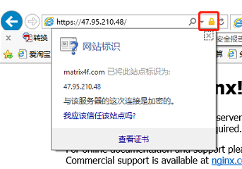

当我们自签名时，我们其实是在做什么
摘自自己计网的实验报告
为了确保自己是真的理解了密码学相关的一些内容，而不是简单的调用OpenSSL生成两个文件糊上去用，我在这里写一下自己对这方面的理解，从下面这些名词逐步深入：
对称加密：保证机密性 一个经典的例子 凯撒加密 典型算法：3DES AES。
散列函数：保证消息的完整性 SHA-1 MD5 等
非对称性加密：非对称性加密是用来解决对称加密中秘钥传输的痛点的。它的机密性是由数学上的复杂度决定的，比如RSA是质数分解。在数学上目前没什么很快的方法（不代表以后没有，或者直接绕过质数分解的破解RSA的方法）。其算法实现中的随机数生成，暴力位数破解或者暴力质数分解都是可以攻击的地方。
非对称加密的缺点是太慢了，比如RSA，又是幂运算又取mod，于是我们可以用非对称加密传对称加密的私钥，对于消息本身还是使用对称加密。
不管对于对称加密还是非对称加密来说，算法+时间=明文，就看信息的价值，值不值得花这个时间。即信息的时效性失效前能否破解。
数字签名：plain text+signature，实质上是非对称加密的一种应用，签名=加密，验证=解密，和消息传输正好反过来。它可以保证消息来源可靠，可以拒绝否认，但不保证机密性（课上对这个地方产生了疑问，后来想通了）。假如你去签消息的散列值，豁豁，不仅签的快了，签名短了，还可以保证消息的完整性。
证书：非对称加密（包括数字签名）虽然解决了秘钥分发问题，但还有一个致命弱点，就是中间者攻击，或者说你拿到的公钥到底是不是真的公钥。为了避免这个问题，我们拿可信第三方的私钥给目标公钥签个名，这就是证书。这个第三方我们管它叫CA， 至于CA的公钥可不可信，这就是个套娃问题了。操作系统会预带一些信任的跟证书。
证书的组成：目标公钥 ，CA的一些信息（颁布人，散列算法，有效期）， 用CA的私钥对前面部分的散列值进行的签名
最后是SSL/TLS，基本上就是上述概念的总集合，混用了上述所有的概念。
- 使用对称加密保证机密性
- 使用非对称加密解决秘钥分发问题
- 使用散列函数保证消息不被修改（完整性）
- 使用证书保证消息来源
另外还有很多降维打击，比如肉身偷私钥啊，收到邮件瞎签名啊。密码学也救不了。
哎，感慨一下，虽然现在理的很清楚，过几个月估计就都忘的一干二净了。
回到正题，当我们给网站自签名的时候，我们其实是在做什么？
1.生成网站的私钥（公钥可以先不做，后面根据X.509生成证书时，OpenSSL会根据私钥生成）
openssl genrsa -out private.key 4096
2.成为一个CA，生成CA的公钥私钥(这里有个野路子：直接拿网站的私钥做CA的私钥，真·自签名。网上很多帖子都是这么做的，也不解释自己做了什么)
openssl genrsa -out ca.key 4096
3.生成证书，用CA的私钥对网站公钥进行加密
先使用网站私钥private.key，生成mycsr.csr证书请求文件
openssl req -new -key private.key -out mycsr.csr
这个时候会让你填很多很多信息，我们填个Beijing Foresty University待会验证
然后使用ca私钥ca.key与证书请求mycsr.csr生成ca.crt证书文件(或者说使用ca的私钥对证书进行签名)
openssl x509 -req -days 365 -in mycsr.csr -signkey ca.key -out ca.crt
4.把证书提供给用户(见下节)
5.实际访问，用户发起https请求，浏览器开始验证证书是否有效（ca公钥是否可信）。因为我们先前将crt文件导入了浏览器的信任列表，所以我们的证书通过了验证（但域名不同，浏览器还是报了警）
验证有效后，用证书中的网站公钥public.key加密一个对称秘钥，传给网站。
网站自己这边用自己的私钥private.key去解密，之后的消息就用这个秘钥进行对称加密的传输。
验证：
我们在windows下打开证书文件，不出意外的话，证书内应该存放着网站的公钥。我们先把private.key的公钥public.key做出来。
openssl rsa -in private.key -out public.key -pubout
再使用在线工具验证一下（证书内公钥的编码格式是ASN.1，而openssl生成的公钥的格式是PKCS8，要转化到同一格式才能对比，这里我选择{N, E}来验证）：

果不其然，两个公钥的N，E吻合，符合预期。
3.配置nginx
还是实验一的那个配置文件
1 | vim /usr/local/nginx/conf/nginx.conf |
1 | # HTTPS server |
记得打开阿里防火墙的443端口
4.为浏览器导入证书
Chrome为例，

之后会弹出一个资源浏览器，选中先前生成的crt文件即可导入成功。
5.测试
这次的测试就没有那么顺利了。重启nginx不到一分钟就给GFW墙了。又是自签名，我还没备案，难免的。

我的直觉是收到了dns污染，于是写host文件，未果。没办法，只能直接使用IP访问了。

可以看到，哪怕手动添加了证书，我依旧没有得到我的小绿锁。点开证书查看详情，一切正常，只是我的证书是颁发给matrix4f.com的，域名不匹配了。就好比你直接使用IP，通过https://140.82.113.4访问github一样，你会发现github的证书也失效了，也是不受信任的。
我去网上了解了一下，ca都是给域名签名，对ip签名基本上是见不到的。只能做到这步停下来了。备案要等挺长时间，大概两三周，算啦算啦。
最后点开详情，看看我们生成的证书吧。

好歹在IE上还是有小锁的

当我们自签名时，我们其实是在做什么